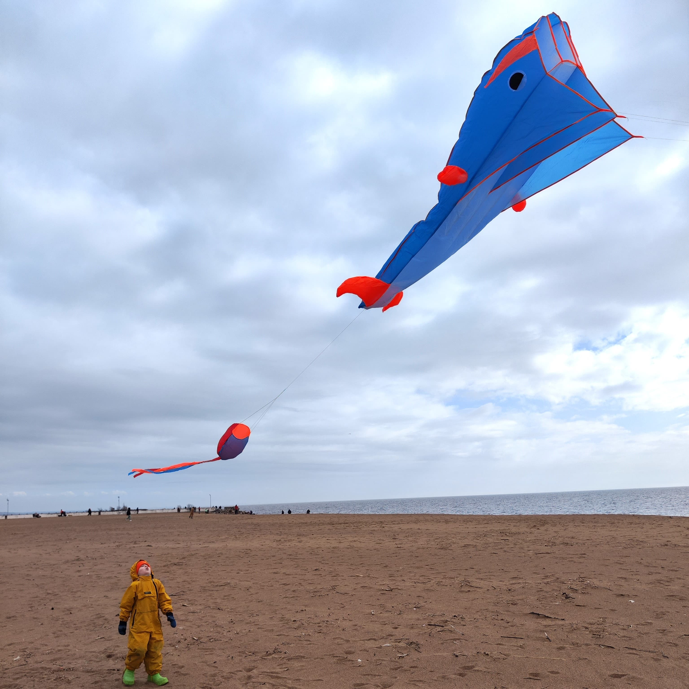

Фритрек и нулевой спринт: Подготовка к работе
</Ветер перемен>
Это было самое начало пути. На этом этапе важно было проникнуться основами и настроиться на учёбу. И, возможно, подумать, как новые знания могут повлиять на ваше будущее.
Когда перемены неизбежны, важно не потерять контроль над ситуацией. Это похоже на сильный ветер. Он может сбить с ног, но в то же время способен облегчить долгий путь. Важно подобрать инструмент, который поможет поймать его и обуздать.